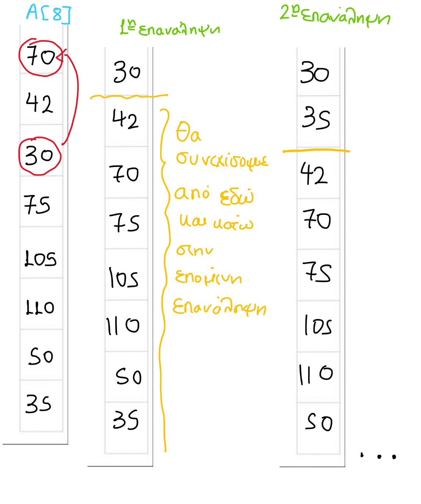

Η ταξινόμηση με επιλογή (selection sort) είναι ένας απλός αλγόριθμος ταξινόμησης που χωρίζει μια λίστα σε δύο μέρη: ταξινομημένο και μη ταξινομημένο. Σε κάθε βήμα, βρίσκει το ελάχιστο στοιχείο από το μη ταξινομημένο μέρος και το ανταλλάσσει με το πρώτο στοιχείο του μη ταξινομημένου.
Ας εφαρμόσουμε τον αλγόριθμο σε έναν πίνακα Α[8] του οποίου τα στοιχεία θέλουμε να ταξινομήσουμε σε αύξουσα σειρά.
ΓΙΑ i ΑΠΟ 1 ΜΕΧΡΙ 7
ΜΙΝ <- Α[i]
ΘΕΣΗ_ΜΙΝ <- i
ΓΙΑ j ΑΠΟ i+1 ΜΕΧΡΙ 7
ΑΝ Α[j]< ΜΙΝ ΤΟΤΕ
ΜΙΝ <- Α[j]
ΘΕΣΗ_ΜΙΝ <- j
ΤΕΛΟΣ_ΑΝ
ΤΕΛΟΣ_ΕΠΑΝΑΛΗΨΗΣ
temp <- Α[i]
A[i] <- A[ΘΕΣΗ_ΜΙΝ]
Α[ΘΕΣΗ_ΜΙΝ] <- temp
ΤΕΛΟΣ_ΕΠΑΝΑΛΗΨΗΣ